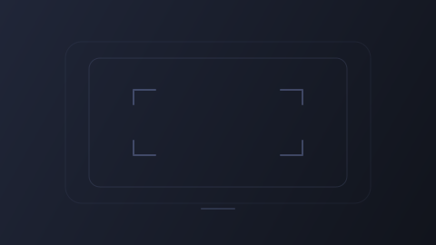

六张矢量素材 · 深色主题 · 原始尺寸与页面语境。以下为设计预览，示例文字不代表真实数据或播放成功。

首播信息按真实资料显示
更换搜索名称后重试
窄屏 320 px · 无封面 / 空来源
空状态文字由界面提供
加载失败：检查网络后重试
常规手机 390 px · 空讨论 / 状态区别
真实播放才显示三竖条。解析中或暂停只有选中边框，SVG 本身没有动画。
装饰只在资料区，播放器区域使用独立占位。插画保持原始多色，不整体染色。